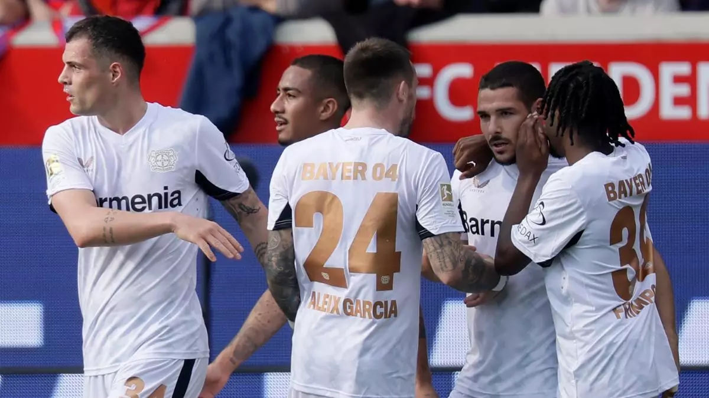
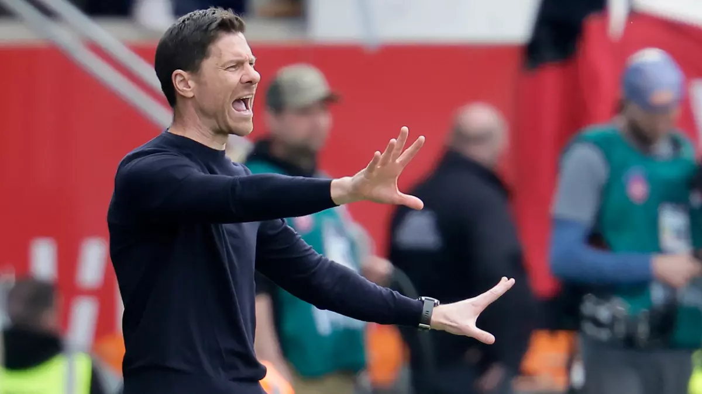

Fue un alivio para el cuadro de Xabi Alonso, sobre el que planearon las secuelas de una semana negra que le costó ya la Copa de Alemania y le podía haber costado, casi definitivamente, la Bundesliga si no hubiera logrado el triunfo en este duelo clave ante el Heidenheim, un adversario que puja por la salvación.
El conjunto de Xabi Alonso solo encontró el acierto ante un rival en la punta opuesta de la tabla, antepenúltimo, con la permanencia como único objetivo y que se aferra a cualquier posibilidad para sobrevivir en la máxima categoría del fútbol alemán, hasta el tramo final, en una de las últimas acciones del encuentro.
Hasta hace poco, el Leverkusen, la sensación del curso pasado, aspiraba a todo. Hace menos de un mes dijo adiós a la Liga de Campeones, superado en octavos por el Bayern Múnich. Pero en tres días dijo casi adiós a sus otros objetivos. Especialmente la Copa, que tenía en la mano y que le arrebató un club de división inferior, el Arminia Bielefeld, que se ganó el lugar en la final.

Ahora, afectado por ese duro revés, tres días después sufrió para ganar en el estadio Tobias Stieler y seguir a seis puntos del líder, que el viernes ganó al Augsburgo, a falta de seis jornadas. Se mantiene el Leverkusen a la espera del fallo del conjunto muniqués. No mereció mucho más el cuadro de Alonso, que se enredó en el planteamiento del conjunto de Frank Schmidt, que mostró atrevimiento y ambición.
De hecho, tuvo las mejores ocasiones, sobre todo al principio en las botas de Adrian Beck, en el minuto 11, o de Benedikt Gimber a la media hora con un disparo que dio en el travesaño. También Marvin Peringer dispuso de una gran ocasión, sin acierto. El Bayer no inquietaba. Inferior al Heidenheim, se quitó el dominio en una jugada que culminó Amine Adli. Pero sin gol.
Después del duelo estuvo más igualado. Los cambios quitaron continuidad al juego, aunque el dominio siempre fue visitante. Un último intento, de Buendía, con intención, acabó en gol. Fue el único. Suficiente y mantiene vivo al Leverkusen.